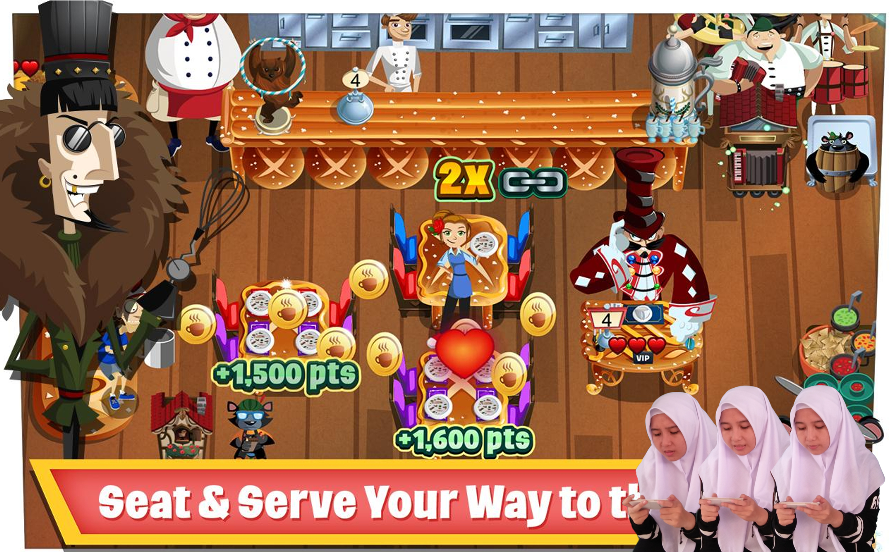

Opening

Hai, nama saya Marwah Kamilah, biasa dipanggil Marwah, Mar, Wah, dan lain-lain. Saya lahir di Bogor, 3 Juni 2001, tepat pada saat Bogor juga ulang tahun. Dan sekarang saya masih di Bogor aja ga pindah-pindah. Saya dulu bersekolah dasar di SDN Empang 2, lalu melanjutkan ke SMPN 2 Bogor, dan sekarang saya bersekolah di SMK-SMAK Bogor, tepatnya pada tahun ini saya menempati kelas 11.
Hobi
Hobi adalah suatu kegiatan yang sering kita lakukan untuk menghabiskan waktu luang ketika tidak ada hal yang perlu dikerjakan dan juga salah satu kegiatan untuk meluangkan stres di Sekolah atau Kantor. Saking sibuknya sekolah di SMAKBO bukan berarti saya tidak punya hobi, tentu saja saya punya hobi diantaranya itu main gitar dan main game. Sebenernya, saya sedang berlajar main gitar, belum mahir seperti teman-teman sekalian, tapi masih anak bawang kata yang lain mah. Tapi saya akan berusaha sekeras mungkin agar saya bisa menjadi gitaris handal seperti yang di tv-tv.
Berikutnya, hobi saya itu bermain game. Game is permainan in Bahasa. Dan saya suka banget main game, apalagi gamenya offline, #savekuotasavelife, begitulah motto saya. Game yang saya mainkan salah satunya Dinner Dash. Dinner dash ini seru banget dan saya rekomendasiin buat kalian, soalnya disini kalian ngater-nganterin makanan gitu ke pelanggan, tapi bakal repot kalau ada pelanggan VIP, soalnya dia serba pengen itu pengen ini, "dikira tangan saya ada sepuluh" batin saya ketika main game itu. Tapi game itu cukup menghibur saya dalam kebosanan, walau kadang sulit. 